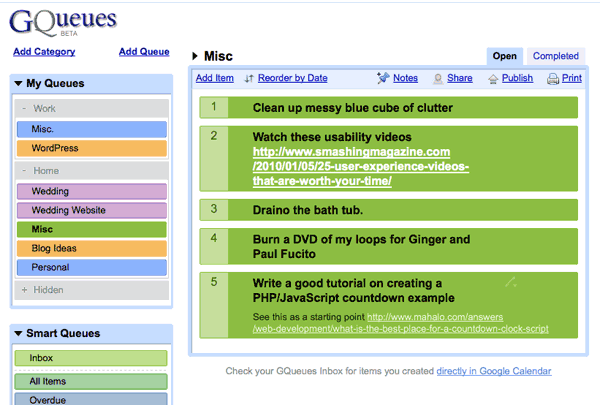

February 1st, 2010

My good friend just became a Library Media Specialist at a DC public school this year. She is in the midst of transforming an old, neglected library full of antiquated books into a resource the students would actually use. But to do that, they need updated books. Here is her take on the situation (emphasis mine):
The majority of the books are from the 1950’s and 1960’s. Much of the information in these books use outdated terminology and often have negative stereotypes of women, African Americans, and hispanics. This is particularly bad since our student population is 75% African American and 25% hispanic. In addition, most of the library collection is above an 8th grade reading level. Last year only 8% of our school scored proficient for reading. Getting books at these students’ reading level is imperative in helping the students improve their reading comprehension in years to come.
So how can you help out?
- Make a cash donation (Be sure to type Book Drive in the Donation Designation)
- Buy books from their Amazon wishlist
 and have them shipped directly to MacFarland Middle School
and have them shipped directly to MacFarland Middle School
- Donate used books that meet the following criteria:
- Share this link with your friends and family. Help spread the word!
All donations are fully tax deductible. You can read the official MacFarland Middle School Book Drive Letter for more information. I’ve already bought all of the Captain Underpants books from their wishlist and you should pick a few books out that you really like to help the children at MacFarland Middle School.
Posted at 11:22 pm in Personal | 3 Comments »
January 28th, 2010
Way back in August of 2007 I built a simple PHP tool that generates place-holder images at different size by simply changing the URL. The idea came to me when I was working on a redesign for USNews.com. I hated opening up Photoshop, creating a new document, filling the background layer, and exporting for web just to make a simple placeholder image. That is why I made dummyimage.com.
I figured it would be useful to other people which is why I also released the complete source code, documented and including instructions for setting it up on your own server. But like most new things, few gave it any notice.

The other day my friend Charlie Park (founder of Pear Budget) found it when doing some in-browser wire-framing and sent out a tweet to all of his followers. But he didn’t stop there. Charlie also posted it to Hacker News, a simple news aggregator aimed at geeks. It was obvious that my little tool was resonating with other developers with the tagline “Lorem ipsom for images.” In 24 hours, the Hacker News story got 161 votes with 77 comments, 513 people bookmarked it on del.icio.us, and 337 tweets.
What really struck me was how dummyimage.com was crossing the language barrier. I saw tweets mentioning in Spanish, Japanese, Russian, German, Dutch, even Latvian. I’m glad my idea was simple enough that foreign speakers could easily pick it up without any translation help.

All of this sudden attention also produced helpful feedback and new feature ideas. I started working on an update this past December for a few additions I wanted to see but this recent surge of interest has lit a fire under my butt to continue developing. As is the nature of opensource software, people don’t have to wait for me; they can adapt the code to their own needs. Here are some iterations that have already been made:
And somewhere down the line I would like to give it an attractive homepage. Hooray for side projects!
Posted at 8:52 am in Coding, Dummyimage.com, Web | 4 Comments »
January 21st, 2010
I was excited for the Fitbit ever since I heard about it at the Techcrunch 50 conference back in 2008. After 2 years following the development, I finally got my own Fitbit. After 3 months of daily use, here is my review.

The Fitbit is a small device that you wear on your hip in order to track your movements throughout the day. As you move, the Fitbit will count your steps just like any other pedometer. The device has one button on the front which will cycle through different stats with each push. When out and about you can check your total number of steps, the number of calories burned, distance traveled, and a flower representing your growth and overall healthiness for the day.
At bedtime you put the Fitbit into a soft wristband and you can track how long and the quality of your sleep. Holding the button down for a few seconds starts the sleep tracker and you have to remember to stop it when you wake up in the morning. As you fall in and out of sleep, the Fitbit tracks your movements and can tell how long it took you to fall asleep, how many times you woke up throughout the night and the actual time you were asleep vs the time you were in bed.

But what makes the Fitbit different happens when you get within a couple of feet of the base station. The data is automatically uploaded to Fitbit.com where you can analyze your data with the help of pretty graphs. Not fussing with manually syncing the data yourself makes it a system that easily fits into ones life. You can build up a history of your daily activity without even thinking about. It’s like Google Analytics for your fitness!

Activity tracking aside, Fitbit.com also has a food log for tracking calories. I don’t use this feature because you still have to measure the food and add it manually. If there was something that calculated nutrition information as it went into my mouth, I would be all over it. The Fitbit isn’t that good… yet.
Overall I’m really happy with my Fitbit. The only downside I can think of is the long order time (oredered one for my Mom in October and it didn’t get here until mid January). It is easily worth the $100 price tag in order to painlessly build up a history of my physical activity and sleep history. I don’t need this information right now, but one day I might, and this tool will come in handy.
Other Reviews
Posted at 11:16 pm in Gadgets, Reviews | 11 Comments »
January 19th, 2010

Oh yea, I should probably start thinking about getting started with my tax preparation.
(via nataliedee)
Posted at 2:57 pm in Business, Random Musings | No Comments »
January 14th, 2010

I imagine this is how high-end crocodiles would rock their sweaters.
Posted at 2:17 pm in Random Musings | No Comments »
January 12th, 2010
There are many things I would like to accomplish in 2010 (exercise more, lose weight, redo my website, create a new logo for myself, release some personal projects, read more books, read less feeds, get married etc.) But I can’t do any of those things unless I organize and plan my projects out more.
I’ve tried many things in the past to try and get organized including e-mailing myself, setting up a personal wiki, and various software tools. But I finally found something that works called GQueues.
GQueues is what you would get if GMail was a to-do app. With GQueues you can
- Group tasks
- Sync deadlines with a Google Calendar
- Add tasks via IM for sorting later
- Access on the go with a mobile version
- Other GQueues features
I’ve been using it for a few weeks now and I am really happy with how easy it fits into how I work. It’s a simple organizational tool that doesn’t get in your way when you’re trying to get something done.

Posted at 11:15 pm in Reviews, Software | 2 Comments »
January 6th, 2010
typophile.com had a type battle for members to design a new logotype for digg.User aluminum posted this fine Bing version of the digg logo.

It’s a clever idea since both brands are 4 letters and the second letter is an “i”.
(via dburka, the creator of the digg logo)
Posted at 8:37 am in Design, Random Musings | No Comments »
December 30th, 2009
…according to a recent leaked screenshot courtesy of Gizmodo.

The $530 price tag is for the unsubsidized, unlocked version. There is one other option of plunking down $180 with a 2-year T-Mobile contract which is attached to a special $80 a month plan including unlimited text + web and 500 minutes. Specifically Weird.
I think the unsubdized rate of $530 is a fair price for a top of the line smartphone. This isn’t like your traditional cell phone, it’s a mobile computer. Here is how the math works out for both options after two years:
$530 phone + $60/month (cheapest plan with unlimited text + web and 500 monthly minutes) x 24 months = $1,970.
$180 phone + $80/month (only available plan with this deal) x 24 months = $2,100, a difference of $130 compared to the unsubsidized plan.
Now this may be completely and utterly wrong. Google’s already officially announced an Android event for January 5th, at which point all will be revealed. Even if these rate plans are real, I’ll still be placing my order as soon as I can. My 3 year old T-Mobile Dash is already shaking in its holster.
Oh and the first hands-on video review of the Google Phone has made its way to YouTube.
Posted at 12:03 am in Gadgets | 2 Comments »
December 28th, 2009
Rumors that Apple is building a tablet computer have reached a fever-pitch over the past six months. The basic gist is it will have a 7 inch screen and run a version of the iPhone OS making a good chunk of the apps available to also run on this new tablet. But why do we even need such a thing?

This thing sounds too big to be carried around with you wherever you go like an iPhone or iPod Touch but too small for long periods of work. It almost seems like it is aimed at two lifestyles: 1) Frequent flyers, 2) a TV watching companion device. This sounds just like the MacBook Air which was introduced on January 15, 2008.
I wonder, how long the battery will last in order to power a 7 inch display? And what extra functionality will this bring to our lives? According to one rumor blog, Apple Insider,
“The tablet is expected to be portrayed as a multimedia device capable of browsing the Web, watching movies, and reading content.”
Wow, you mean just like my laptop of today? Again, why is everyone getting worked up over this?
There have also been rumors swirling that the iPhone is coming to Verizon, which seems less likely from a technical stance (CDMA vs. GSM). I think if we ever see an Apple/Verizon partnership it will be for a data plan for this tablet device so you can use the web wherever you go. Verizon currently does this with a few netbooks, though it is a horrible deal. $199.99 + a 2 year contract of at least $39.99 per month ($1,159.75 total), all for a dinky, underpowered netbook that retails for $399.99 on HP’s own site.
So the idea of an Apple tablet looks lackluster from my point of view pre-announcement. Maybe Apple has a card up its sleeve when it announces the device and the world will wonder how we lived in the pre-tablet era. Perhaps this post will go down in Apple fanboy history just like all the negative reactions when Apple first introduced the iPod in October, 2001. Or maybe the Apple Tablet will just fade away into gadget history just like the Apple Hi-Fi.
“Great just what the world needs, another freaking MP3 player. Go Steve! Where’s the Newton?!”
—WeezerX80’s reaction to the announcement of the iPod.
Posted at 9:10 am in Gadgets, Rant | No Comments »
December 24th, 2009
Check out this weather map. There is no way you’re getting through that if you need to head west. Good luck with your travels on Christmas Eve.
Posted at 10:15 am in Mobile Post | No Comments »